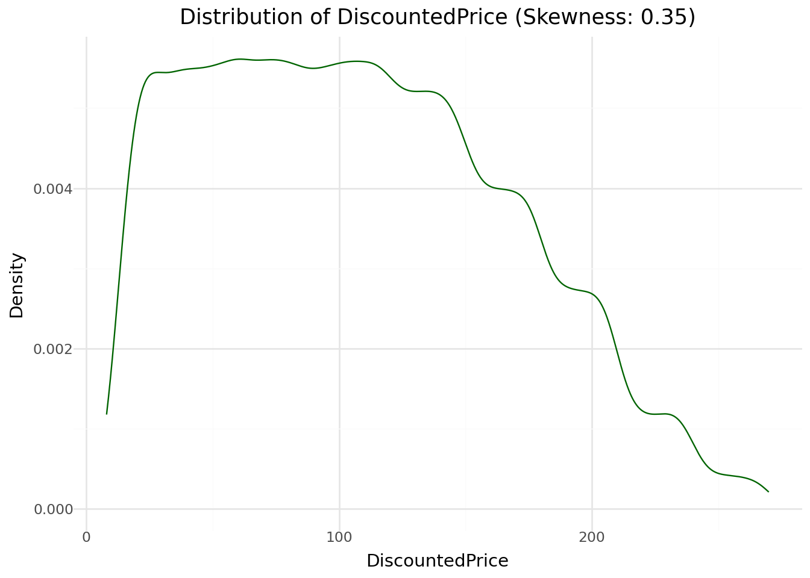

A data-driven approach to understanding what drives off-price sales
In this project, we attempt to provide insights on Faro and its retail business of discounted branded products.
Author
Dan A. Tshisungu
Published
June 28, 2025
I. INTRODUCTION
I.1. Background
Faro, an off-price retailer that specialises in selling branded products at discounted prices. The business wants to understand which product types, brands, and
suppliers move fastest, how pricing affects inventory turnover, and how customer shopping habits vary by region and time.
I.2. Project Objective
The main objectives of this project are:
clean and prepare the data for analysis by identifying possible quality issues.
Perform a business-oriented exploratory data analysis (EDA) to identify key insights on how specific discounts and features influence the company’s sales, business performance, and customer behavior.
Build and evaluate a predictive model to predict whether a given product will be sold on clearance or not.
I. 3. Data Overview:
We load the dataset and assess its structure and summary statistics.
There are no missing value in the dataset. There is therefore no need for handling incomplete records.
II.3.3. Distribution analysis
We check the distribution of both the numerical and categorical features. But first we extract numerical and categorical features.
Code
numerical_columns = df.select_dtypes(include="number").columns.to_list()categorical_columns = df.select_dtypes(exclude="number").columns.to_list()print(f" **Numerical features in the dataset:** {numerical_columns}")print(f" **Categorical features in the dataset:** {categorical_columns}")
**Numerical features in the dataset:** ['OriginalPrice', 'DiscountedPrice', 'Quantity']
**Categorical features in the dataset:** ['TransactionID', 'StoreID', 'Date', 'ProductID', 'Brand', 'Supplier', 'Category', 'Subcategory', 'Type', 'CustomerID', 'Region', 'ClearanceFlag']
Caution
Remember we have to convert the Date feature later on.
numerical = ["OriginalPrice", "DiscountedPrice", "Quantity"]for feat in numerical: # Extract skewnessprint(f"{feat}:") skewness = skew(df[feat])# Printprint(f"Skewness is {skewness}")# Generate plot p = (ggplot(df, aes(x=feat)) + geom_density(color='darkgreen', alpha=.7) + ggtitle(f"Distribution of {feat} (Skewness: {skewness:.2f})") + xlab(feat) + ylab("Density") + theme_minimal())# Show the plot display(p)
OriginalPrice:
Skewness is -0.0028062700583212194
DiscountedPrice:
Skewness is 0.35201956858296896

Quantity:
Skewness is -0.576037618829498
Numerical feature Insights
OriginalPrice feature is uniformly distributed meaning products are sold throughout the price range and no particular OriginalPrice is informative.
DiscountedPrice feature is skewed to the right meaning most products are sold at a lower DiscountedPrice, up to R140, compared to higher prices, above R150.
Quantity feature has a minimum of -2 meaning one or two items returned every now and then.
Code
df.describe(exclude="number")
TransactionID
StoreID
Date
ProductID
Brand
Supplier
Category
Subcategory
Type
CustomerID
Region
ClearanceFlag
count
100000
100000
100000
100000
100000
100000
100000
100000
100000
100000
100000
100000
unique
100000
10
140
9000
10
7
4
16
51
60470
3
2
top
T100000
S002
2024-02-23
P2610
Tommy Hilfiger
Asos
Accessories
Hats
Shorts
C76591
KZN
No
freq
1
10102
776
27
10180
23446
25122
6469
3654
9
33460
79980
We can have a more detailed view of the categorical features below:
Code
categories = ["StoreID", "ProductID", "Brand", "Supplier", "Category", "Subcategory", "Type", "CustomerID", "Region"]for col in categories:print(f"{col} unique values: {df[col].value_counts()}")print("--"*20)
At this stage Listing 1, we observed that the lowest of value of the Quantity feature is -2. We must take care of returned products as well create a RevenueCaution 1.
Features
Every returned product was entered as a negative number. We create a new feature to describe if a product is return. e.g IsReturn.
Machine learning behave differently to the presence of negative numbers such as quantity = -1. We must consider both the business logic (A negative quantity means a return and thus an opportunity loss) and the model performance impact.
Code
# 1. Separate quantities and create indicatorsdf['QuantityAbs'] = df['Quantity'].abs()# Identify returnsdf['IsReturn'] = (df['Quantity'] <0).astype(int)df['TransactionType'] = df['Quantity'].apply(lambda x: 'Return'if x <0else'Sale')# 2. Create revenue Revenue with proper handlingdf['RevenueAbs'] = np.where(df['ClearanceFlag'] =='No', df['QuantityAbs'] * df['OriginalPrice'], df['QuantityAbs'] * df['DiscountedPrice'])# 3. Create final Revenue (negative for returns)df['RevenueFinal'] = np.where(df['IsReturn'] ==1, -df['RevenueAbs'], df['RevenueAbs'])# 4. Drop original Quantity if desireddf = df.drop('Quantity', axis=1)# 5. create time-based featuresdf['Year'] = df['Date'].dt.yeardf['Month'] = df['Date'].dt.monthdf['WeekOfYear'] = df['Date'].dt.isocalendar().weekdf['DayOfWeek'] = df['Date'].dt.dayofweek# 6. Calculate discount percentagedf['DiscountPercentage'] = ((df['OriginalPrice'] - df['DiscountedPrice']) / df['OriginalPrice'] *100).round(2)df.head(5)
TransactionID
StoreID
Date
ProductID
Brand
Supplier
Category
Subcategory
Type
OriginalPrice
...
QuantityAbs
IsReturn
TransactionType
RevenueAbs
RevenueFinal
Year
Month
WeekOfYear
DayOfWeek
DiscountPercentage
0
T100000
S008
2024-04-12
P4655
Puma
Asos
Footwear
Sneakers
Lifestyle Sneakers
243.03
...
5
0
Sale
1215.15
1215.15
2024
4
15
4
20.00
1
T100001
S007
2024-04-12
P9119
Nike
Asos
Kids
Baby
Booties
144.83
...
5
0
Sale
724.15
724.15
2024
4
15
4
10.00
2
T100002
S008
2024-04-09
P4186
Puma
SoleSupplier
Kids
Girls
Dress
60.00
...
4
0
Sale
240.00
240.00
2024
4
15
1
40.00
3
T100003
S008
2024-02-07
P2999
Ralph Lauren
Bloomingdale's
Footwear
Sandals
Flip Flops
20.22
...
2
0
Sale
16.18
16.18
2024
2
6
2
59.99
4
T100004
S009
2024-01-22
P2853
Michael Kors
Bloomingdale's
Footwear
Sandals
Flip Flops
21.98
...
2
0
Sale
43.96
43.96
2024
1
4
0
10.01
5 rows × 24 columns
C. Outlier Analysis
We observed above that DiscountedPrice is skewed to the right indicating the presence of outliers.
There are many ways to detect outliers:
By calculating the skewness of the distribution and establishing a threshold
By visualizing the distribution of features
And more advanced methods more outlier detection
Using the IQR for the feature.
Above we applied the first two. We can confirm that with the last method:
For DiscountedPrice, we have:
min = 8
25% = 58
50% = 103
75% = 149.98
100% = 270
By finding the difference between each interval, we can deduce from where outliers occur:
25% - min = 50
50% - 25% = 45
75% - 50% = 46
100% - 75%= 120
Outliers Insight
We notice a jump from 75th percentile to the 100th depicting outliers.
75th percentile + 50 = ~200. Anything above 200 in the DiscountedPrice is an outlier.
Though a mild skewness (0.35) is observed, we will attempt to deal with it.
Transformation Skewness
0 Original 0.352
1 Log -0.781
2 Sqrt -0.176
3 BoxCox -0.116
4 YeoJohnson -0.116
Best transformation: BoxCox
Final implementation
Code
# Apply Box-Cox and store the Lambda value df['DiscountedPriceBoxCox'], lambda_val = boxcox(df['DiscountedPrice'] +1)# Drop original columndf = df.drop('DiscountedPrice', axis=1)# Update your revenue calculation with transformed pricesdf['RevenueAbs'] = np.where(df['ClearanceFlag'] =='No', df['QuantityAbs'] * df['OriginalPrice'], df['QuantityAbs'] * df['DiscountedPriceBoxCox'])print(f"New skewness: {stats.skew(df['DiscountedPriceBoxCox']):.3f}")df.head(5)
New skewness: -0.116
TransactionID
StoreID
Date
ProductID
Brand
Supplier
Category
Subcategory
Type
OriginalPrice
...
IsReturn
TransactionType
RevenueAbs
RevenueFinal
Year
Month
WeekOfYear
DayOfWeek
DiscountPercentage
DiscountedPriceBoxCox
0
T100000
S008
2024-04-12
P4655
Puma
Asos
Footwear
Sneakers
Lifestyle Sneakers
243.03
...
0
Sale
1215.150000
1215.15
2024
4
15
4
20.00
30.868606
1
T100001
S007
2024-04-12
P9119
Nike
Asos
Kids
Baby
Booties
144.83
...
0
Sale
724.150000
724.15
2024
4
15
4
10.00
24.486402
2
T100002
S008
2024-04-09
P4186
Puma
SoleSupplier
Kids
Girls
Dress
60.00
...
0
Sale
240.000000
240.00
2024
4
15
1
40.00
11.337297
3
T100003
S008
2024-02-07
P2999
Ralph Lauren
Bloomingdale's
Footwear
Sandals
Flip Flops
20.22
...
0
Sale
8.567399
16.18
2024
2
6
2
59.99
4.283699
4
T100004
S009
2024-01-22
P2853
Michael Kors
Bloomingdale's
Footwear
Sandals
Flip Flops
21.98
...
0
Sale
43.960000
43.96
2024
1
4
0
10.01
7.776294
5 rows × 24 columns
Summary of Data Preparation
We loaded our dataset and check its observations and features
We made sure there were no missing values nor any duplicated values
We created new features to enrich our dataset and make it more consistent for further analysis.
We converted Date and transformed the DiscountedPrice feature to handle the format for the former and outliers for the latter.
III. EXPLORATORY DATA ANALYSIS - EDA
We explore the dataset in depth and answer business questions.
Let us have a look at the updated dataset’s features:
units_by_category = df_sales.groupby('Category')['QuantityAbs'].sum().sort_values(ascending=False)units_by_brand = df_sales.groupby('Brand')['QuantityAbs'].sum().sort_values(ascending=False).head(15)units_by_supplier = df_sales.groupby('Supplier')['QuantityAbs'].sum().sort_values(ascending=False).head(15)category_units_df = units_by_category.reset_index()category_units_df.columns = ['Category', 'Units']brand_units_df = units_by_brand.reset_index()brand_units_df.columns = ['Brand', 'Units']supplier_units_df = units_by_supplier.reset_index()supplier_units_df.columns = ['Supplier', 'Units']print("Top 5 Categories by units sold:")for i, (cat, units) inenumerate(units_by_category.head().items(), 1):print(f"{i}. {cat}: {units:,} units")print("\nTop 5 Brands by units sold:")for i, (brand, units) inenumerate(units_by_brand.head().items(), 1):print(f"{i}. {brand}: {units:,} units")print("\nTop 5 Suppliers by units sold:")for i, (brand, units) inenumerate(units_by_supplier.head().items(), 1):print(f"{i}. {brand}: {units:,} units")
Top 5 Categories by units sold:
1. Accessories: 71,445 units
2. Apparel: 71,300 units
3. Kids: 71,154 units
4. Footwear: 70,780 units
Top 5 Brands by units sold:
1. Tommy Hilfiger: 28,915 units
2. Ralph Lauren: 28,840 units
3. Under Armour: 28,739 units
4. Adidas: 28,542 units
5. DKNY: 28,408 units
Top 5 Suppliers by units sold:
1. Asos: 66,762 units
2. Nordstrom: 43,342 units
3. Bloomingdale's: 42,764 units
4. Macy's: 42,366 units
5. JD Sports: 38,301 units
revenue_by_category = df_sales.groupby('Category')['RevenueFinal'].sum().sort_values(ascending=False)revenue_by_brand = df_sales.groupby('Brand')['RevenueFinal'].sum().sort_values(ascending=False).head(15)revenue_by_supplier = df_sales.groupby('Supplier')['RevenueFinal'].sum().sort_values(ascending=False).head(15)category_revenue_df = revenue_by_category.reset_index()category_revenue_df.columns = ['Category', 'Revenue']brand_revenue_df = revenue_by_brand.reset_index()brand_revenue_df.columns = ['Brand', 'Revenue']supplier_revenue_df = revenue_by_supplier.reset_index()supplier_revenue_df.columns = ['Supplier', 'Revenue']print("\nTOP 5 Categories by Revenue:")for i, (cat, rev) inenumerate(revenue_by_category.head().items(), 1):print(f"{i}. {cat}: R {rev:,.2f}")print("\nTOP 5 Brands by Revenue:")for i, (brand, rev) inenumerate(revenue_by_brand.head().items(), 1):print(f"{i}. {brand}: R {rev:,.2f}")print("\nTOP 5 Suppliers by Revenue:")for i, (brand, rev) inenumerate(units_by_supplier.head().items(), 1):print(f"{i}. {brand}: R {rev:,.2f}")
TOP 5 Categories by Revenue:
1. Kids: R 10,225,549.88
2. Apparel: R 10,210,762.89
3. Accessories: R 10,159,280.09
4. Footwear: R 10,110,418.12
TOP 5 Brands by Revenue:
1. Tommy Hilfiger: R 4,117,751.97
2. DKNY: R 4,116,944.23
3. Under Armour: R 4,111,537.65
4. Ralph Lauren: R 4,078,220.00
5. Adidas: R 4,072,014.76
TOP 5 Suppliers by Revenue:
1. Asos: R 66,762.00
2. Nordstrom: R 43,342.00
3. Bloomingdale's: R 42,764.00
4. Macy's: R 42,366.00
5. JD Sports: R 38,301.00
Insights of Analysis
In all three regions (GP, KZN, WC),Asos is the top performer supplier selling the most units both on sales and at normal price. Thus generating also the most revenue.
Based on the number of units sold:
In GP, Tommy Hilfiger is the top brand selling the most units at normal prices and the second best on sales products.
In KZN, Ralph Lauren is the top brand selling the most units both on sales and at normal prices.
In WC, Adidas is the top brand selling the most units at normal price and Ralph Lauren is the top brand selling the most units on sales.
Tommy Hilfiger is the top performer brand in units sold. Followed by Ralph Lauren and Under Armour.
Tommy Hilfiger is the top performer brand in revenue. Followed by DKNY and Under Armour.
Accessories is the top performer Category followed by Apparel and Kids in units sold while Kids, Apparel, and Accessories are the top performers in revenue.
III.2. Discount effect on top brands & suppliers
Supplier Discount % and units sold
Code
# discount data for scatter plotdiscount_scatter_df = df_sales[df_sales['DiscountPercentage'] >0].sample(min(5000, len(df_sales[df_sales['DiscountPercentage'] >0]))).copy()# discount distributiondiscount_dist_df = df_sales[df_sales['DiscountPercentage'] >0].copy()# Group by Suppliersupplier_summary = ( discount_dist_df.groupby('Supplier') .agg(TotalUnitsSold=('QuantityAbs', 'sum'), AvgDiscountPercent=('DiscountPercentage', 'mean')) .reset_index())# Group by Brandbrand_summary = ( discount_dist_df.groupby('Brand') .agg(TotalUnitsSold=('QuantityAbs', 'sum'), AvgDiscountPercent=('DiscountPercentage', 'mean')) .reset_index())# Select top 10 supplierstop_suppliers = supplier_summary.nlargest(10, 'TotalUnitsSold')# Select top 10 brandstop_brands = brand_summary.nlargest(10, 'TotalUnitsSold')p_discount_scatter = ( ggplot(top_suppliers, aes(x='AvgDiscountPercent', y='TotalUnitsSold', label='Supplier')) + geom_point(color='#faca80', size=4, alpha=0.8) + geom_text(nudge_y=5, size=8) + labs( title='Top 7 Suppliers: Discount % vs. Units Sold', x='Average Discount Percent', y='Total Units Sold' ) + theme_minimal() + theme(figure_size=(6, 5)))p_discount_scatter
Supplier discount % and Units
Asos, top performer supplier in units sold, has an average discount percentage of 32.3%, whereas Nordstrom and Bloomingda have an average discount percentage of 43.3% with a performance of more or less 42,000 units, same as Macy's with an average discount percentage of 25%. Depicting how the discount percentage does not drive sales.
III.3. Average turnover per store
Turnover Statistics
Code
# Calculate weekly sales per store (sales only)weekly_sales = df_sales.groupby(['StoreID', 'WeekOfYear'])['QuantityAbs'].sum().reset_index()avg_weekly_turnover = weekly_sales.groupby('StoreID')['QuantityAbs'].mean().sort_values(ascending=False)print("Stores performance KPI:")print(f"- Best performing store: {avg_weekly_turnover.index[0]} ({avg_weekly_turnover.iloc[0]:.1f} units/week)")print(f"- Average weekly turnover across all stores: {avg_weekly_turnover.mean():.1f} units/week")print(f"- Median weekly turnover: {avg_weekly_turnover.median():.1f} units/week")print(f"- Standard deviation: {avg_weekly_turnover.std():.1f} units/week")print("\nTop 5 Stores by weekly turnover:")for i, (store, turnover) inenumerate(avg_weekly_turnover.head(5).items(), 1):print(f"{i}. Store {store}: {turnover:.1f} units/week")
Stores performance KPI:
- Best performing store: S002 (1438.0 units/week)
- Average weekly turnover across all stores: 1423.4 units/week
- Median weekly turnover: 1423.8 units/week
- Standard deviation: 8.5 units/week
Top 5 Stores by weekly turnover:
1. Store S002: 1438.0 units/week
2. Store S010: 1429.9 units/week
3. Store S003: 1428.4 units/week
4. Store S001: 1428.2 units/week
5. Store S009: 1426.5 units/week
Clearance vs Non-Clearance (Sales Only):
QuantityAbs RevenueFinal
sum mean sum mean
ClearanceFlag
No 227842 3.00 36373670.00 479.34
Yes 56837 2.99 4332340.98 227.65
Sales and returns
IsReturn RevenueFinal QuantityAbs
sum mean sum mean sum
ClearanceFlag
No 4097 0.051 35380209.05 442.363 234025
Yes 989 0.049 4217442.73 210.661 58307
RETURN ANALYSIS (All Transactions):
Non-Clearance:
- Return rate: 0.051
- Total return transactions: 4,097
Clearance:
- Return rate: 0.049
- Total return transactions: 989
Clearance Impact Insights
Faro has sold more items at normal price (227842 units for R36,373,670.00) than at discount price ( 56837 units for R4,332,340.98).
The return rates for items by their clearance status is roughly the same, 5.1% when sold at not price and 4.9% when sold at discounted price indicating that clearance does not impact the return.
ClearanceFlag is the target feature of interest. We attempt to predict whether a product will be sold at clearance or at normal price. This will guide the marketing team to know when, how, and for which products to promote clearance sales to maximize revenue. It is, however, a tricky task as any product WILL definitely be sold at clearance.
Thus the goal is to penalize prediction of Yes when the product would have been sold at normal price.
A 1:4 ratio between Yes and No for clearance status displaying imbalance.
IV.2. Feature Selection
Feature selection is a very important step in machine learning, just like the saying garbage in, garbage out, feeding the wrong features may negatively impact the model performance.
There are numerous way to select what features, recursive selection, mutual information, to more advanced methods making use of evolutionary algorithms such as particle swarm optimization or grey wolf.
In this project, we will follow a simple mutual information(MI), a concept from information theory telling us how much we can learn from a feature if we know the value of of another.
Goal: I first want to establish a baseline model without performing any advanced selection or engineering of features.
DiscountPercentage has a 0.74 correlation with ClearanceFlag indicating that higher discount percentage likely to sell the product at clearance which is obvious. Maybe binning to find out what range of percentage is likely to sell at clearance.
RevenueAbs (-0.47) and RevenueFinal (-0.25) indicate that when revenue increases, the item is unlikely to have been sold at clearance.
A high DiscountedPrice will reduce the likelihood of the item being sold at clearance. Maybe binning the feature for better interpretability and possibly improve model performance.
Code
categorical_cols = ['StoreID', 'Brand', 'Supplier', 'Category', 'Subcategory', 'Type', 'Region','TransactionType']### ----- Define the function to calculate the M.I on the training set ONLYdef calculate_mi(series):return mutual_info_score(series, df["ClearanceFlag"])#### ---- Calculate MI between 'y' and the categorical variables of the training set ONLY df_mi = df[categorical_cols].apply(calculate_mi)df_mi = df_mi.sort_values(ascending=False).to_frame(name='MI')print('Below are the variable with highest M.I score:')display(df_mi.head(15))
Below are the variable with highest M.I score:
MI
Type
0.000251
Subcategory
0.000068
StoreID
0.000067
Region
0.000062
Brand
0.000043
Supplier
0.000020
Category
0.000010
TransactionType
0.000006
Note
Knowing the Type of the product provides more information on whether or not it will be sold at clearance.
TransactionType values are not very informative.
Brand, StoreID, Region, and Subcategory values also provide valuable information on the target feature status. Maybe creating interaction between these categorical features might be helpful for a better generalization.
Base model
1. Select features
Code
# Based on correlationselected_num = ['OriginalPrice', 'QuantityAbs','RevenueAbs', 'RevenueFinal', 'DiscountPercentage','DiscountedPriceBoxCox']# Based on MIselected_cat = ['StoreID', 'Brand', 'Supplier', 'Category', 'Subcategory', 'Type', 'Region']
2. Split
Code
# Splitdf_train_full, df_test = train_test_split(df, test_size=0.2, random_state=42)df_train, df_val = train_test_split(df_train_full, test_size=0.25, random_state=42)## ---- Extract and create "ClearanceFlag" for the different splitsy_train = df_train["ClearanceFlag"].valuesy_val = df_val["ClearanceFlag"].valuesy_test = df_test["ClearanceFlag"].values### ------ Delete "ClearanceFlag"from the splitsdel df_train['ClearanceFlag']del df_val['ClearanceFlag']del df_test['ClearanceFlag']print(f"Training set: {len(df_train)}, Validation set: {len(df_val)} , Test set: {len(df_test)}")
Training set: 60000, Validation set: 20000 , Test set: 20000
We noticed earlier a very high correlation between certain features to the clearance status. This results in a model learning for example that whenever DiscountPercentage is high, predict ClearanceFlag=Yes.
A feature like Revenue is a target-leaking feature as it was engineered based on the ClearanceFlag status. Solution: Drop any feature that is engineered from the target feature and observe the result.
No overfitting, that is a good sign. But underfitting.
The base model never predicts class 1 (Clearance) as the accuracy is 80% which is also the percentage of observations that were sold at normal price.
Recall for class 1 = 0 indicating all actual clearance items are missed.
Precision for class 1 = 0 indicating when it predicts class 1 (which it doesn’t), it’s always wrong.
Macro avg: Treats both classes equally which exposes failure on class 1.
Weighted avg: Dominated by class 0 which looks better but hides the issue.
Possible solutions: - Introduce feature engineering and observe the results. - Try a sampling technique such oversampling or undersampling or SMOTE. - Use a tree-based models like decision tree.
IV.3. Feature Engineering
To enrich the features, we create new features to help the model learn better. The features will be created in the following groups: